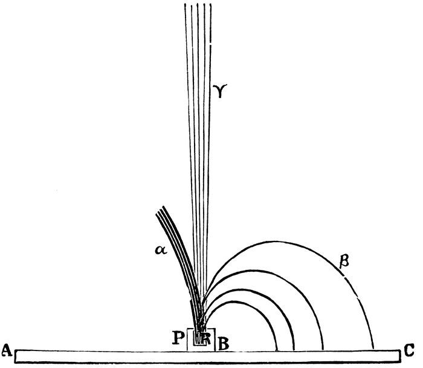
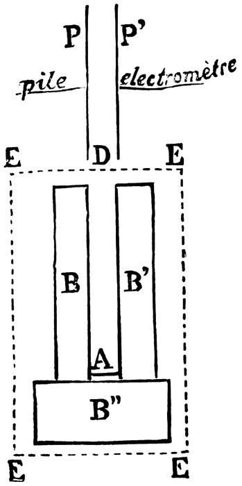
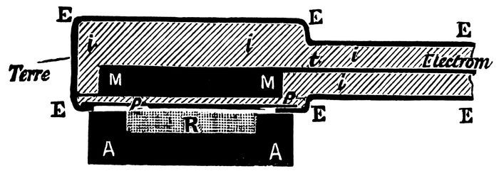
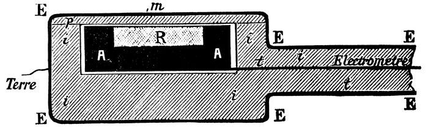
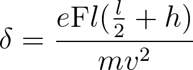
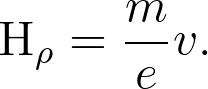
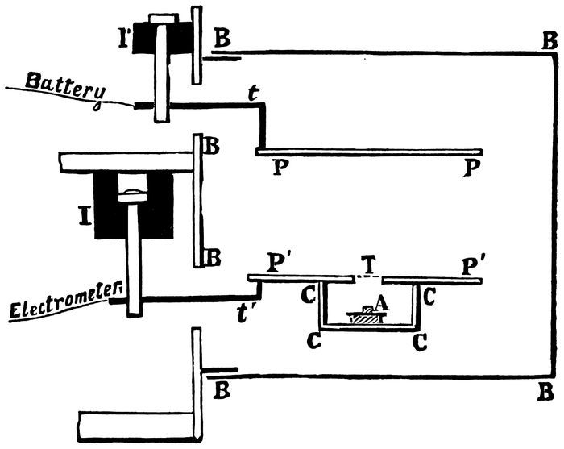
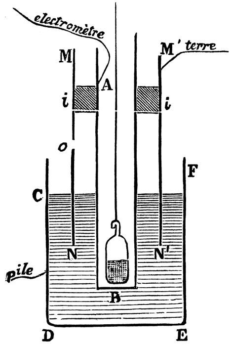

Chapter 5: CHAPTER III. Radiation of the New Radio-active Substances¶
5.1 Methods of Investigation of the Radiation¶
In order to investigate the radiation emitted by radio-active bodies, any one of the properties of this radiation can be utilised. Thus the action of the rays on photographic plates may serve, or their property of ionisation of the air, which renders it a conductor, or their capacity for causing fluorescence of certain bodies. Henceforth, in speaking of these different methods of working, I shall use the expressions radiographic method, electrical method, fluoroscopic method.
The first two have been used from the beginning in the study of uranium rays; the fluoroscopic method can only be applied in the case of the new bodies which are strongly radio-active, for the feebly active bodies such as uranium and thorium produce no appreciable fluorescence. The electrical method is the only one which serves for exact determinations of intensity; the other two are specially adapted for giving qualitative results, and only furnish rough approximations. The results obtained with the three methods just considered are not strictly comparable the one with the other. The sensitive plate, the gas which is ionised, the fluorescent screen, are in reality receivers, which absorb the energy of the radiation, and transform it into another kind of energy, chemical energy, ionic energy, or luminous energy. Each receiver absorbs a fraction of the radiation, which depends essentially upon its nature. Later on, we shall see that the radiation is complex, that the fractions of the radiation absorbed by the different receivers may differ among themselves both quantitatively and qualitatively. Finally, it is neither evident, nor even probable, that the energy absorbed is entirely transformed by the receiver into the form that we wish for observation; part of this energy may be transformed into heat, into the evolution of secondary radiations which may or may not assist in the production of the observed phenomenon, into chemical action which differs from that under observation, &c., and here also the effective action of the receiver, with reference to the end we have in view, depends essentially upon the nature of that receiver.
Let us compare two radio-active substances, one containing radium and the other polonium, and which show an equal degree of activity in the condenser of Fig. 1. If each is covered with a thin leaf of aluminium, the second appears considerably less active than the first, and the same is the case when they are placed under the same fluorescent screen, if the latter is of sufficient thickness, or is placed at a certain distance from the two radio-active bodies.
5.2 Energy of Radiation¶
Whatever be the method of research employed, the energy of radiation of the new radio-active substances is always found to be considerably greater than that of uranium and thorium. Thus it is that, at a short distance, they act instantaneously upon a photographic plate, whereas an exposure of twenty-four hours is necessary when operating with uranium and thorium. A fluorescent screen is vividly illuminated by contact with the new radio-active bodies, whilst no trace of luminosity is visible with uranium and thorium. Finally, the ionising action upon air is considerably stronger in the ratio of 106 approximately. But it is, strictly speaking, not possible to estimate the total intensity of the radiation, as in the case of uranium, by the electrical method described at the beginning (Fig. 1). With uranium, for example, the radiation is almost completely absorbed by the layer of air between the plates, and the limiting current is reached at a tension of 100 volts. But the case is different for strongly radio-active bodies. One portion of the radiation of radium consists of very penetrating rays, which penetrate the condenser and the metallic plates, and are not utilised in ionising the air between the plates. Further, the limiting current cannot always be obtained for the tensions supplied; for example, with very active polonium the current remains proportional to the tension between 100 and 500 volts. Therefore the experimental conditions which give a simple interpretation are not realised, and, consequently, the numbers obtained cannot be taken as representing the measurement of the total radiation; they merely point to a rough approximation.
5.3 Complex Nature of the Radiation¶
The researches of various physicists (MM. Becquerel, Meyer and von Schweidler, Giesel, Villard, Rutherford, M. and Mdme. Curie) have proved the complex nature of the radiation of radio-active bodies. It will be convenient to specify three kinds of rays, which I shall denote, according to the notation adopted by Mr. Rutherford, by the letters α, β, γ.
I. The α-rays are very slightly penetrating, and appear to constitute the principal part of the radiation. These rays are characterised by the laws by which they are absorbed by matter. The magnetic field acts very slightly upon them, and they were formerly thought to be quite unaffected by the action of this field. However, in a strong magnetic field, the α-rays are slightly deflected; the deflection is caused in the same manner as with cathode rays, but the direction of the deflection is reversed; it is the same as for the canal rays of the Crookes tubes.
II. The β-rays are less absorbable as a whole than the preceding ones. They are deflected by a magnetic field in the same manner and direction as cathode rays.
III. The γ-rays are penetrating rays, unaffected by the magnetic field, and comparable to Röntgen rays.

Consider the following imaginary experiment:—Some radium, R, is placed at the bottom of a small deep cavity, hollowed in a block of lead, P (Fig. 4). A sheaf of rays, rectilinear and slightly expanded, streams from the receptacle. Let us suppose that a strong uniform magnetic field is established in the neighbourhood of the receptacle, normal to the plane of the figure and directed towards the back. The three groups of rays, α, β, γ, will now be separated. Then rather faint γ-rays continue in their straight path without a trace of deviation. The β-rays are deflected in the manner of cathode rays, and describe circular paths in the plane of the figure. If the receptacle is placed on a photographic plate, A C, the portion, B C, of the plate which receives the β-rays is acted upon. Lastly, the α-rays form a very intense shaft which is slightly deflected, and which is soon absorbed by the air. These rays describe in the plane of the figure a path of great curvature, the direction of the deflection being the reverse of that with the β-rays.
If the receptacle is covered with a thin sheet of aluminium (0·1 m.m. thick), the α-rays are suppressed almost entirely, the β-rays are lessened, and the γ-rays do not appear to be absorbed to any great extent.
5.4 Action of the Magnetic Field¶
We have seen that the rays emitted by radio-active bodies have many properties common to cathode rays and to Röntgen rays. Cathode rays, as well as Röntgen rays, ionise the air, act on photographic plates, cause fluorescence, undergo no regular deflection. But the cathode rays differ from Röntgen rays in being deflected from their rectilinear path by the action of the magnetic field, and in the transportation of charges of negative electricity.
The fact that the magnetic field acts upon the rays emitted by radio-active substances was discovered almost simultaneously by MM. Giesel, Meyer and von Schweidler, and Becquerel. These physicists observed that the rays of radio-active substances are deflected by the magnetic field in the same manner and direction as the cathode rays; their observations were in relation to the β-rays.
M. Curie demonstrated that the radiation of radium comprises two groups of quite distinct rays, of which one is readily deflected by the magnetic field (β-rays), whilst the other seems to be unaffected by the action of this field (α- and γ-rays).
M. Becquerel did not find that the specimens of polonium prepared by us emitted rays of the cathode kind. On the contrary, he first noticed the effect of the magnetic field on a specimen of polonium prepared by himself. None of the polonium prepared by us ever gave rise to rays of the cathode order.
The polonium of M. Giesel only gives rise to these rays when recently prepared, and it is probable that the emission is due to the phenomenon of induced radio-activity of which we shall speak later.
The following are experiments which prove that one portion of the radiation of radium, and one portion only, consists of easily deflected rays (β-rays). These experiments were done according to the electrical method.
The radio-active body A (Fig. 5) sends forth radiations in the direction A D between the plates P and P′. The plate P is now at a potential of 500 volts, plate P′ is connected to an electrometer and to a quartz electric piezometer. The intensity of the current passing through the air under the influence of the radiations is measured. The magnetic field can be established at will perpendicular to the plane of the figure over the whole region E E E E. If the rays are deflected, even slightly, they no longer pass between the plates, and the current is suppressed. The region of the passage of the rays is surrounded with masses of lead, B, B′, B″, and by the armatures of the electro-magnet; when the rays are deflected, they are absorbed by the masses of lead B and B′.

The results obtained depend essentially on the distance, A D, of the radiating substance, A, from the condenser at D. If the distance A D is great enough (greater than 7 c.m.), most of the radium rays (90 to 100 per cent) arriving at the condenser are deflected and suppressed for a field of 2500 units. These are the β-rays. If the distance A D is less than 65 m.m., a smaller part of the rays are deflected by the action of the field; this portion is also entirely deflected by a field of 2500 units, and the proportion of the rays suppressed is not increased by increasing the field from 2500 to 7000 units.
The proportion of the rays not suppressed by the field increases with decrease of the distance, A D, between the radiating body and the condenser. For small distances, the rays which can be easily deflected form a very small fraction of the total radiation. The penetrating rays are therefore, for the most part, deviable rays of the cathode order (β-rays).
Under the experimental conditions just described, the action of the magnetic field on the α-rays could not be well observed for the fields employed. The chief radiation, apparently undergoing no deflection, observed at a short distance from the radiating source, consisted of α-rays; the undeflected radiation observed at a greater distance consisted of γ-rays.
If an absorbing lamina (aluminium or black paper) is placed in the path of the bundle of rays, those which pass through are nearly all deflected by the field in such a way that, with the aid of the screen and the magnetic field, almost all the radiation is suppressed in the condenser, the remainder being due to the γ-rays, the proportion of which is small. The α-rays are absorbed by the screen.
An aluminium plate of 1/100 m.m. thickness is sufficient for the suppression of almost all the rays not readily deflected when the substance is far enough from the condenser; for smaller distances (34 m.m. and 51 m.m.) two pieces of this aluminium foil are necessary to give the same result.
Similar determinations were made with four substances containing radium (chlorides or carbonates) of very different activity; analogous results were obtained.
It may be remarked that, in all cases, the penetrating rays deflected by the magnet (β-rays) form only a small fraction of the total radiation; they influence but slightly the determinations in which the whole radiation is made use of to produce conductivity of the air.
The radiation emitted by polonium may be studied by the electrical method. When the distance, A D, of the polonium from the condenser is varied, no current is observed at first while the distance is fairly great; on nearing the polonium, the radiation suddenly becomes manifest with great intensity; the current then increases uniformly whilst approaching the polonium, but the magnetic field produces no appreciable effect under these conditions. The radiation of polonium is apparently limited in space, and does not pass into the air beyond a kind of sheath surrounding the substance to a thickness of several centimetres.
The interpretation of the experiments I have just described must be accompanied by some important general reservations. In speaking of the proportion of the rays deflected by the magnet, I refer only to that portion of the radiation capable of causing a current in the condenser. In employing the fluorescent action of the Becquerel rays, or their action on photographic plates, the proportion would probably be different—a measure of intensity having, as a rule, no meaning except for the method of measurement adopted.
The rays of polonium are α-rays. In the experiments just described, I observed no action of the magnetic field upon them, but the experimental conditions were such that a slight deflection would pass unnoticed.
The experiments made by the radiographic method confirmed the preceding results. Taking radium as the source of radiation, and receiving the impression on a plate parallel to the primitive shaft and normal to the field, a very clear print is obtained of two shafts separated by the action of the field, the one deflected, the other not deflected. The β-rays constitute the deflected beam; the α-rays, being very slightly deflected, are not to be distinguished from the undeflected bundle of the γ-rays.
5.5 Deflected β-Rays¶
The experiments of M. Giesel and MM. Meyer and von Schweidler showed that the radiation of the radio-active bodies is, in part at least, deflected by a magnetic field, and that this deflection resembles that of the cathode rays. M. Becquerel investigated the action of the field on the rays by the radiographic method. The experimental arrangement was that of Fig. 4. The radium was placed in the lead receptacle, P, and this receptacle was placed on the sensitive face of a photographic plate, A C, covered with black paper. The whole was placed between the poles of an electro-magnet, the magnetic field being normal to the plane of the figure.
If the field is directed to the back of this plane, the part B C of the plate is acted upon by rays which, after having described circular paths, return to the plate and strike it at a right angle. These rays are β-rays.
M. Becquerel has demonstrated that the impression consists of a wide diffused band, a continuous spectrum indeed, showing that the sheaf of deviable rays emitted by the source is formed of an infinite number of radiations unequally deflected. If the gelatin of the plate be covered with different absorbent screens (paper, glass, metals), one portion of the spectrum is suppressed, and it is found that the rays most deflected by the magnetic field—otherwise those which have the smallest radius of curvature—are the most completely absorbed. With each screen, the impression on the plate begins at a certain distance from the source of radiation, this distance being proportional to the absorptive power of the screen.
5.6 Charge of the Deflected Rays¶
The cathode rays are, as shown by M. Perrin, charged with negative electricity. Further, according to the experiments of M. Perrin and M. Lenard, they are capable of carrying their charge through the metallic envelopes connected to earth and through isolating screens. At every point where the cathode rays are absorbed, there is a continuous evolution of negative electricity. We have proved that the same is the case for the deflected β-rays of radium. The deviable β-rays of radium are charged with negative electricity.
(Note.—Let the radio-active substance be placed on one of the plates of a condenser, this plate being connected to earth; the second plate is connected to an electrometer, it receives and absorbs the rays emitted by the substance. If the rays are charged, a continuous flow of electricity into the electrometer should be observed. In this experiment, carried out in air, we were not able to detect a charge accompanying the rays, but such an experiment is not delicate. The air between the plates being caused by the rays to conduct, the electrometer is no longer isolated, and can only respond to charges if these be sufficiently strong. In order that the α-rays may not interfere with the experiment, they may be suppressed by covering the source of radiation with a thin metallic screen. We repeated this experiment, without more success, by causing the rays to pass through the interior of a Faraday cylinder in connection with the electrometer).
According to the preceding experiments, it was evident that the charge of the rays of the radiating body employed was a weak one.
In order to fix a feeble evolution of electricity upon the conductor which absorbs the rays, this conductor should be completely insulated; this is effected by screening it from the air, either by placing it in a tube with a very perfect vacuum, or by surrounding it with a good solid dielectric. We employed the latter arrangement.

A conducting disc, M M (Fig. 6), is connected by the wire, t, to the electrometer; the disc and wire are completely enveloped by the insulating substance i i i i; the whole is again surrounded with the metallic covering, E E E E, which is in electric connection with the earth. The insulator, p p, and the metallic envelope are very thin upon one of the faces of the disc. This face is exposed to the radiation of the barium and radium salt, R, placed outside in a lead receptacle. The rays emitted by the radium penetrate the metallic envelope and the insulating lamina, p p, and are absorbed by the metallic disc, M M. The latter then becomes the source of a continuous evolution of negative electricity, as determined by the electrometer, and is measured by means of a quartz piezometer.
The current thus created is very weak. With very active barium-radium chloride, forming a layer of 2·5 sq. c.m. in area, and of 0·2 c.m. in thickness, a current of magnitude 10–11 ampères is obtained, the rays utilised having traversed, before being absorbed by the disc M M, a thickness of aluminium of 0·01 m.m., and a thickness of ebonite of 0·3 m.m.
We used successively lead, copper, and zinc for the disc M M, ebonite and paraffin for the insulator; the results obtained were the same.
The current diminishes with increasing distance from the source of radiation, R, also when a less active product is used.
We obtained the same results again when the disc M M is replaced by a Faraday cylinder filled with air, and covered outside with insulating material. The opening of the cylinder, closed by the thin insulating plate, p p, was opposite the radiating source.

Finally, we made the inverse experiment, which was to place the lead receptacle with the radium in the centre of the insulating material and in connection with the electrometer (Fig. 7), the whole being surrounded with the metallic covering connected to earth.
Under these conditions, it is evident from the electrometer that the radium has a positive charge equal in magnitude to the negative charge of the former experiment. The radium rays penetrate the thin dielectric plate, p p, and leave the conductor inside carrying with them negative electricity.
The α-rays of radium do not interfere in these experiments, being almost completely absorbed by a very thin layer of matter. The method just described is not suitable for the study of the charge of the rays of polonium, these rays very slightly penetrating. We observed no indication of any charge in the case of polonium, which gives rise to α-rays only; but, for the reason just given, no conclusion can be drawn from this.
Thus, in the case of the deflected β-rays of radium, as in the case of cathode rays, the rays carry a charge of electricity. But, hitherto, the existence of electric charges uncombined with matter has been unknown. In the study of the emission of the β-rays of radium, we are therefore led to make use of the theory which is in vogue for the study of cathode rays. In this ballistic theory, formulated by Sir William Crookes, since developed and completed by Prof. J. J. Thomson, the cathode rays consist of extremely minute particles, which are hurled from the cathode with great velocity, and which are charged with negative electricity. We might similarly conceive that radium sends into space negatively electrified particles.
A specimen of radium, enclosed in a solid thin perfectly insulated envelope, should become spontaneously charged to a very high potential. By the ballistic hypothesis the potential would increase until the potential difference of the surrounding conductors became sufficient to hinder the ejection of the electrified particles and to cause their return to the source of radiation.
We have performed an experiment on these lines. A specimen of very active radium was enclosed for some time in a glass vessel. In order to open the vessel, we made a trace on the glass with a glass cutter. Whilst so doing, we clearly heard the report of a spark, and upon examining the vessel with a magnifying glass, we observed that the glass had been pierced by a spark at the spot where it had been weakened by the scratch. The phenomenon produced is comparable to the rupture of the glass of an overcharged Leyden jar.
The same phenomenon occurred with another glass. Further, at the moment of the passing of the spark, M. Curie, who was holding the glass, felt the electric shock of discharge in his fingers.
Certain kinds of glass have good insulating properties. If the radium is enclosed in a sealed glass vessel, well insulated, it is to be expected that, at a given moment, the vessel will be spontaneously perforated.
Radium is the first example of a body which is spontaneously charged with electricity.
5.7 Action of the Electric Field upon the Deflected β-Rays of Radium¶
The β-rays of radium, being analogous to the cathode rays, should be deflected by an electric field in a manner similar to the latter; i.e., as would a particle of matter negatively charged and hurled into space with a great velocity. The existence of such a deflection has been demonstrated both by M. Dorn and M. Becquerel.
Let us consider the case of a ray which traverses the space situated between the two plates of a condenser. Suppose the direction of the ray parallel to the plates: when an electric field is established between the latter, the ray is subjected to the action of this uniform field along its whole path in the condenser l. By reason of this action the ray is deflected towards the positive plate and describes the arc of a parabola; on leaving the field, it continues its path in a straight line, following the tangent to the arc of the parabola at the point of exit. The ray can be received on a photographic plate perpendicular to its original direction. Observations are taken of the impression produced on the plate when the field is zero, and when it has a known value, and from that is deduced the value of the deflection, δ, which is the distance of the points in which the new direction of the ray and its original direction meet a common plane perpendicular to the original direction. If h is the distance of this plane from the condenser, i.e., at the edge of the field, we have, by a simple calculation,—

m being the mass of the moving particles, e its charge, v its velocity, and F the strength of the field.
The experiments of M. Becquerel enable him to assign a value approaching to δ.
5.8 Relation of the Charge to the Mass for a Particle Negatively Charged Emitted by Radium¶
When a material particle having a mass m and a negative charge e, is projected with a velocity v into a uniform magnetic field perpendicular to its initial velocity, this particle describes, in a plane normal to the field and passing through its initial velocity, an arc of a circle of radius ρ, so that—H being the strength of the field—we have the relation—

If, for the same ray, the deflection, δ, and the radius of curvature, ρ, be measured in a magnetic field, values could be found from these two experiments for the ratio e
m and for the velocity, v.
The experiments of M. Becquerel threw the first light upon this subject. They gave for the ratio e
m a value approximately equal to 107 absolute electro-magnetic units, and for v a magnitude of 1·6 × 1010. These values are of the same order of magnitude as those of the cathode rays.
Accurate experiments have been made on the same subject by M. Kaufmann. This physicist subjected a narrow beam of radium rays to the simultaneous action of an electric field and a magnetic field, the two fields being uniform and having a similar direction, normal to the original direction of the beam. The impression produced on a plate normal to the primitive beam and placed beyond the limits of the field with reference to the source, has the form of a curve, each point of which corresponds to one of the original beam. The most penetrating and least deflected rays are at the same time those with the greatest velocity.
It follows from the experiments of M. Kaufmann, that for the radium rays, of which the velocity is considerably greater than that of the cathode rays, the ratio e
m decreases, while the velocity increases.
According to the researches of J. J. Thomson and Townsend, we may assume that the moving particle, which constitutes the ray, possesses a charge, e, equal to that carried by an atom of hydrogen during electrolysis, this charge being the same for all the rays. We are therefore led to the conclusion that the mass of the particle, m, increases with increase of velocity.
These theoretical considerations lead to the idea that the inertia of the particle is due to its state of charge during motion, the velocity of an electric charge in motion being incapable of modification without expenditure of energy. To state it otherwise, the inertia of the particle is of electro-magnetic origin, and the mass of the particle is—in part at least—a virtual mass or an electro-magnetic mass. M. Abraham goes further, and assumes that the mass of the particle is entirely an electro-magnetic mass. If, according to this hypothesis, the value of this mass, m, be calculated for a known velocity, v, we find that m approaches infinity when v approaches the velocity of light, and that m approaches a constant value when the velocity, v, is much less than that of light. The experiments of M. Kaufmann are in agreement with the results of this theory, the importance of which is great because it foreshadows the possibility of establishing mechanical bases upon the dynamical of little particles of matter charged in a state of motion.
These are the figures obtained by M. Kaufmann for e
m and v.
e
m Electro-magnetic units. vc.m.
sec.
1·865 × 107 0·7 × 1010 For cathode rays (Simon).
1·31 × 107 2·36 × 1010 For radium rays (Kaufmann).
1·17 × 107 2·48 × 1010
0·97 × 107 2·59 × 1010
0·77 × 107 2·72 × 1010
0·63 × 107 2·83 × 1010
M. Kaufmann concludes, from comparison of his experiments with the theory, that the limiting value of the ratio e
m for radium rays of relatively small velocity would be the same as the value e
m for cathode rays.
The most complete experiments of M. Kaufmann were made with a minute quantity of pure radium chloride, with which we provided him.
According to M. Kaufmann’s experiments, certain β-rays of radium possess a velocity very near to that of light. These rapid rays seem to possess great penetrating capacity towards matter.
5.9 Action of the Magnetic Field upon the α-Rays¶
In a recent work, Mr. Rutherford announced that, in a powerful electric or magnetic field, the α-rays of radium are slightly deflected, in the manner of particles positively electrified and possessing great velocity. Mr. Rutherford concludes from his experiments that the velocity of the α-rays is of the order of magnitude 2·5 × 109c.m.
sec. and that the ratio e
m for these rays is of the order of magnitude 6 × 103, which is 104 times as great as for the deflected β-rays. We shall see later that these conclusions of Mr. Rutherford are in agreement with the properties already known of the α-radiation, and that they account, in part at least, for the law of absorption of this radiation.
The experiments of Mr. Rutherford have been confirmed by M. Becquerel. M. Becquerel has further demonstrated that polonium rays behave in a magnetic field like the α-rays of radium, and that, for the same field, they seem to have the same curvature as the latter.
It also appears from M. Becquerel’s experiments that the α-rays do not form a magnetic spectrum, but act rather like a homogeneous radiation, all the rays being equally deflected.
5.10 Action of the Magnetic Field on the Rays of other Radio-active Substances¶
We have just seen that radium gives off α-rays comparable to the tube rays, β-rays comparable to cathode rays, and γ-rays which are penetrating and not deflected. Polonium gives off α-rays only. Amongst the other radio-active substances, actinium seems to behave like radium, but the study of its radiation has not yet advanced so far as in the case of radium. As regards the faintly radio-active bodies, we know to-day that uranium and thorium give rise to α-rays as well as β-rays (Becquerel, Rutherford).
5.11 Proportion of β-Rays in the Radiation of Radium¶
As I have already mentioned, the proportion of β-rays increases with increase of distance from the source of radiation. These rays never occur alone, and for great distances the presence of γ-rays is always discernible. The presence of very penetrating, undeflected rays in the radiation of radium was first observed by M. Villard. These rays constitute only a small portion of the radiation measured by the electrical method, and their presence escaped our notice in our first experiments, so that we believed falsely that the radiation at great distances contained only rays capable of deflection.
The following are the numerical results obtained with experiments made by the electrical method with an apparatus similar to that of Fig. 5. The radium was only separated from the condenser by the surrounding air. I shall indicate by the letter d the distance from the source of radiation to the condenser. The numbers of the second line represent the current subsisting when the magnetic field is acting, supposing the current obtained with no field equal to 100 for each distance. These numbers may be considered as giving the percentage of the total α- and γ-rays, the deflection of the α-rays having been scarcely observable with the conditions employed.
At great distances there are no α-rays, and the undeflected radiation is therefore of the γ kind only.
Experiments made at short distances:—
| d, in centimetres | 3·4 | 5·1 | 6·0 | 6·5 |
|---|---|---|---|---|
| Percentage of undeflected rays | 74 | 56 | 33 | 11 |
Experiments made at long distances with a product considerably more active than that which was used for the preceding series:—
| d, in centimetres | 14 | 30 | 53 | 80 | 98 |
|---|---|---|---|---|---|
| Percentage of undeflected rays | 12 | 14 | 17 | 14 | 16 |
| d | 124 | 157 | |||
| Percentage of undeflected rays | 14 | 11 |
It is thus evident that after a certain distance the proportion of undeflected rays in the radiation is approximately constant. These rays probably all belong to the γ species.
The following is another series of experiments in which the radium was enclosed in a very narrow glass tube, placed below the condenser and parallel to the plates. The rays emitted traversed a certain thickness of glass and air before entering the condenser:—
| d, in centimetres | 2·5 | 3·3 | 4·1 | 5·9 | 7·5 | 9·6 | 11·3 |
|---|---|---|---|---|---|---|---|
| Percentage rays not deflected | 33 | 33 | 21 | 16 | 14 | 10 | 9 |
| d | 13·9 | 17·2 | |||||
| Percentage rays not deflected | 9 | 10 |
As in the preceding experiments, the number of the second line approximate to a constant value, when the distance d increases, but the limit is reached for smaller distances than in the preceding series, because the α-rays have been more completely absorbed by the glass than the β- and γ-rays.
The following experiment shows that a thin sheet of aluminium (0·01 m.m. thick) absorbs principally α-rays. The product being placed 5 c.m. from the condenser, the proportion of rays other than β, when the magnetic field is acting, is about 71 per cent. When the same substance is covered with the sheet of aluminium, the distance remaining the same, the radiation transmitted is found to be almost totally deflected by the magnetic field, the α-rays having been absorbed by the aluminium. The same result is obtained when paper is used as the absorbing screen.
The greatest part of the radiation of radium consists of α-rays, which are probably emitted principally by the superficial layer of the radiating matter. When the thickness of the layer of radiating matter is varied, the intensity of the current increases with this thickness; the increase is not proportional to the thickness for the whole of the radiation; it is, moreover, more considerable for the β-rays than for the α-rays, so that the proportion of β-rays increases with the thickness of the active layer. The source of radiation being placed at a distance of 5 c.m. from the condenser, it is found that for a thickness equal to 0·4 m.m. of the active layer, the total radiation is given by the number 28, and the proportion of the β-rays is 29 per cent. By making the layer 2 m.m. thick, i.e., five times as thick, a total radiation equal to 102, and a proportion of β-rays equal to 45 per cent are obtained. The total radiation which exists at this distance has therefore been increased in the ratio of 3·6, and the β-radiation has become five times as strong.
The preceding experiments were made by the electrical method. When the radiographic method is used, certain results seem to be in contradiction with what precedes. In the experiments of M. Villard, a beam of radium rays, subjected to the action of the magnetic field, was received on to a pile of photographic plates. The undeflected and penetrating γ-beam passed through all the plates, leaving its trace on each. The deflected β-beam produced an impression on the first plate only. This beam appeared therefore to contain no rays of great penetration.
On the contrary, in our experiments a beam which is propagated in the air contains at the greatest distances accessible to observation about 9/10 of β-rays, and the same is the case when the source of radiation is enclosed in a little sealed glass vessel. In M. Villard’s experiments, these deflected and penetrating β-rays did not affect the photographic plates beyond the first, because they are to a great extent diffused in all directions by the first solid obstacle encountered, and no longer form a beam. In our experiments the rays given off by radium and transmitted through the glass of the vessel were also probably scattered by the glass, but the vessel being very small would itself act as a source of β-rays at its surface, and we were able to follow the course of the latter to a great distance from the vessel.
The cathode rays of Crookes tubes can only traverse very thin screens (aluminium screens of 0·01 m.m. thickness). A beam of rays striking the screen normally is scattered in all directions; but the diffusion becomes less with diminishing thickness of the screen, and for very thin screens the emerging beam is practically the prolongation of the incident beam.
The deflected β-rays of radium behave in a similar manner, but the transmitted beam experiences, for the same thickness of screen, a much slighter modification. According to the experiments of M. Becquerel, the very readily deflected β-rays of radium (those with a relatively small velocity) are powerfully scattered by an aluminium screen of thickness 0·1 m.m.; but the penetrating and less deflected rays (rays of the cathode kind of great velocity) pass through this screen without being sensibly diffused, whatever be the inclination of the screen to the direction of the beam. The β-rays of great velocity penetrate without diffusion a much greater thickness of paraffin (several centimetres), and in this the curvature of the beam produced by the magnetic field can be traced. The thicker the screen, and the more absorbent the material of which it is composed, the greater is the modification of the deflected primitive beam, because, with increasing thickness of screen, diffusion occurs progressively among fresh groups of rays of increasing penetration.
The β-rays of radium experience a diffusion in passing through the air, which is very marked for readily deflected rays, but which is much slighter than that produced by equal thicknesses of solid substances. For this reason, the β-rays traverse long distances in the air.
5.12 Penetrating Power of the Radiation of Radio-active Bodies¶
Since the beginning of the researches on radio-active bodies, investigations of the absorption produced by different screens upon the rays given off by these bodies have been carried on. In a previous paper on this subject I gave figures (quoted at the beginning of this work) representing the penetrating power of uranium and thorium rays. Mr. Rutherford has made a special study of the radiation of uranium, and proved it to be heterogeneous. Mr. Owens has arrived at the same results for thorium rays. When the discovery of strongly radio-active bodies immediately followed upon this, the penetrating power of their rays was also studied by various physicists (Becquerel, Meyer and von Schweidler, Curie, Rutherford). The first observations brought to light the complexity of the radiation, which seems to be a general phenomenon, and common to the radio-active bodies. In them we have sources which give rise to a variety of radiations, each of which has a power of penetration proper to itself.
Radio-active bodies emit rays which are propagated both in the air and in vacuo. The propagation is rectilinear; this fact is proved by the distinctness and shape of the shadows formed by interposing bodies opaque to the radiation between the source and the sensitive plate or fluorescent screen which serves as receiver, the source being of small magnitude in comparison with its distance from the receiver. Various experiments demonstrating the rectilinear propagation of uranium, radium, and polonium rays have been made by M. Becquerel.
It is interesting to know the distance that rays can travel in air. We have found that radium emits rays which can be detected in the air at a distance of several metres from the source. In certain of our electrical determinations, the action of the source upon the air of the condenser made itself felt at a distance of between 2 and 3 metres. We have also obtained fluorescent effects and radiographic impressions at similar distances. The experiments are not easily carried out, except with very intense radio-active sources, because, independently of the absorption by the air, the action upon a given receiver varies inversely as the square of the distance from a source of small dimensions. This radiation, which travels a long distance in the case of radium, comprises rays of the cathode kind and rays which are undeflected; however, the deflected rays predominate, according to the results of the experiments already mentioned. The greater part of the radiation (α-rays) is, on the contrary, limited in air to a distance of about 7 c.m. from the source.
I made several experiments with radium enclosed in a little glass vessel. The rays emerging from the vessel, after traversing a certain space of air, were received in a condenser, which served to measure their ionising capacity by the usual electrical method. The distance, d, from the source to the condenser was varied, and the current of saturation, i, obtained in the condenser was measured. The following are the results of one of the series of determinations:—
| d, c.m. | i. | i × d2 × 10–3. |
|---|---|---|
| 10 | 127 | 13 |
| 20 | 38 | 15 |
| 30 | 17·4 | 16 |
| 40 | 10·5 | 17 |
| 50 | 6·9 | 17 |
| 60 | 4·7 | 17 |
| 70 | 3·8 | 19 |
| 100 | 1·65 | 17 |
After a certain distance, the intensity of radiation varies inversely as the square of the distance from the condenser.
The radiation of polonium is only propagated in air to a distance of a few centimetres (4 to 6 c.m.) from the source of radiation.
In the case of the absorption of radiations by solid screens, we find another fundamental difference between radium and polonium. Radium emits rays capable of penetrating great thicknesses of solid matter, e.g., several centimetres of lead or of glass. The rays which have passed through a great thickness of a solid body are extremely penetrating, and it is practically impossible to absorb them entirely by any material whatever. But these rays form only a small fraction of the total radiation, the greater part of which is absorbed by a slight thickness of solid matter.
Polonium emits rays which are readily absorbed, and which can only pass through extremely thin screens.
The following are figures showing the absorption produced by an aluminium lamina of thickness 0·01 m.m. This lamina was placed above and almost in contact with the substance. The direct radiation and that transmitted by the aluminium were measured by the electrical method (apparatus of Fig. 1); the current of saturation was practically obtained in every case. I have represented the activity of the radiating body by a, that of uranium being unity.
| a. | Fraction of radiation transmitted. | |
|---|---|---|
| Chloride of barium and radium | 57 | 0·32 |
| Bromide of barium and radium | 43 | 0·30 |
| Chloride of barium and radium | 1200 | 0·30 |
| Sulphate of barium and radium | 5000 | 0·29 |
| Sulphate of barium and radium | 10,000 | 0·32 |
| Metallic bismuth and polonium | 0·22 | |
| Compounds of uranium | 0·20 | |
| Compounds of thorium in a thin layer | 0·38 |
We see that radium compounds of different nature and activity give very similar results, as I have already pointed out in the case of uranium and thorium compounds at the beginning of this work. We see also that, taking into account the whole of the radiation, and with a given absorbent screen, the different radio-active bodies can be arranged in the following decreasing order of penetrating power:—Thorium, radium, polonium, uranium.
These results are similar to those which have been published by Mr. Rutherford.
Mr. Rutherford also finds that the order is the same when air is the absorbent substance. But it is probable that this order has no absolute value, and would not be maintained independently of the nature and thickness of the screen. Experiment shows, indeed, that the law of absorption is very different for polonium and radium, and that, for the latter, the absorption of the rays of each of the three groups must be considered separately.
Polonium is particularly well adapted to the study of α-rays, because the specimens which we possess emit no other kind of rays. I made a preliminary series of experiments with extremely active recently prepared specimens of polonium. I found the absorbability of the rays to increase with increase of thickness of the matter traversed. This singular law of absorption is contrary to that known for other kinds of radiation.
I employed for this research our apparatus for the determination of electrical conductivity arranged in the following manner:—
The two plates of a condenser, P P and P′ P′ (Fig 8), are horizontally disposed in a metallic box, B B B B, connected to earth. The active body, A, placed in a thick metallic box, C C C C, connected with the plate P′ P′, acts upon the air of the condenser across a metallic sheet, T; the rays which pass through the sheet are alone utilised for producing the current, the electric field being limited by the sheet. The distance, A T, of the active body from the sheet may be varied. The field between the plates is established by means of a battery. By placing in A upon the active body different screens, and by adjusting the distance A T, the absorption of rays which travel long or short distances in the air may be determined.

The following are the results obtained with polonium:—
For a certain value of the distance A T (4 c.m. and more), no current passes; the rays do not penetrate the condenser. When the distance A T is diminished, the appearance of the rays in the condenser is manifested somewhat suddenly, a weak current changing to one of considerable strength for a slight diminution of distance; the current then increases regularly as the active body continues to approach the sheet T.
When the active body is covered with a sheet of aluminium 1/100 m.m. thick, the absorption produced by the lamina becomes greater, the greater the distance A T.
If a second similar lamina of aluminium be placed upon the first, each absorbs a fraction of the radiation it receives, and this fraction is greater for the second lamina than for the first.
In the following table I have represented in the first line the distances in centimetres between the polonium and the sheet T; in the second line the percentage of the rays transmitted by a sheet of aluminium; in the third line the percentage of the rays transmitted by two sheets of the same aluminium:—
| Distance A T | 3·5 | 2·5 | 1·9 | 1·45 | 0·5 |
|---|---|---|---|---|---|
| Percentage of rays transmitted by one lamina | 0 | 0 | 5 | 10 | 25 |
| Percentage of rays transmitted by two laminæ | 0 | 0 | 0 | 0 | 0·7 |
In these experiments the distance of the plates, P and P′, was 3 c.m. We see that the interposition of the aluminium screen diminishes the intensity of the radiation to a greater degree at further distances than at nearer distances.
This effect is still more marked than the preceding figures seem to indicate. For a distance of 0·5 c.m. 25 per cent represents the mean penetration for all the rays which pass beyond this distance. If, for example, only those rays between 0·5 c.m. and 1 c.m. be comprehended, the penetration would be greater. And if the plate P be placed at a distance of 0·5 c.m. from P′ the fraction of the radiation transmitted by the aluminium lamina (for A T = 0·5 c.m.) is 47 per cent, and through two laminæ it is 5 per cent of the original radiation.
I have recently performed a second series of experiments with these same specimens of polonium, the activity of which was considerably diminished, the interval of time between the two series of experiments being three years.
In the former experiments, polonium nitrite was used; in the latter, the polonium was in the state of metallic particles obtained by fusing the nitrite with potassium cyanide.
I found that the radiation of polonium had preserved its essential characteristics, and I discovered new results. The following, for different values of the distance A T, are the fractions of the radiation transmitted by a screen composed of four superposed very thin leaves of beaten aluminium.
| Distance A T, in centimetres | 0 | 1·5 | 2·6 |
|---|---|---|---|
| Percentage of rays transmitted by the screen | 76 | 66 | 39 |
I also found that the fraction of the radiation absorbed by a given screen increases with the thickness of the material already traversed by the radiation, but this only occurs after the distance A T has reached a certain value. When this distance is zero (the polonium being in contact with the sheet, either outside or inside the condenser), it is observed that with several similar superposed screens, each absorbs the same fraction of the radiation it receives; otherwise expressed, the intensity of the radiation diminishes therefore according to an exponential law as a function of the thickness of the material traversed, as in the case of homogeneous radiation transmitted by the lamina without changing its nature.
The following numerical results are given with reference to these experiments:—
For a distance A T equal to 1·5 c.m. a thin aluminium screen transmits the fraction 0·51 of the radiation it receives when acting alone, and the fraction 0·34 of the radiation it receives when it is preceded by another similar screen.
On the contrary, for a distance A T equal to zero, the same screen transmits in both the cases considered the same fraction of the radiation it receives, and this fraction is equal to 0·71; it is therefore greater than in the preceding case.
The following numbers indicate for a distance A T equal to 0 and for a succession of thin superposed screens, the ratio of the radiation transmitted to the radiation received for each screen:—
| Series of nine very thin copper leaves. | Series of seven very thin aluminium leaves. |
|---|---|
| 0·72 | 0.69 |
| 0·78 | 0.94 |
| 0·75 | 0.95 |
| 0·77 | 0.91 |
| 0·70 | 0.92 |
| 0·77 | 0.93 |
| 0·69 | 0.94 |
| 0·79 | |
| 0·68 |
Taking into account the difficulties of the manipulation of very thin screens and of the superposition of screens in contact, the numbers of each column may be looked upon as constant; the first number only of the aluminium column indicates a greater absorption than that indicated by the following numbers.
The α-rays of radium behave similarly to the rays of polonium. These rays may be investigated almost isolated by deflecting to one side the β-rays with the magnetic field; the γ-rays seem of slight importance in comparison with the α-rays. The operation can only be carried on at some distance from the source of radiation. The following are the results of an experiment of this kind. The fraction of the radiation transmitted by a lamina of aluminium 0·01 m.m. thick is measured; this screen was placed always in the same position, above and at a little distance from the source of radiation. With the apparatus of Fig. 5, the current produced in the condenser for different values of the distance A D is observed, both with and without the screen:—
| Distance A D | 6·0 | 5·1 | 3·4 |
|---|---|---|---|
| Percentage of rays transmitted by the aluminium | 3 | 7 | 24 |
The rays which travel furthest in the air are those most absorbed by the aluminium. There is therefore a great similarity between the absorbable α-rays of radium and the rays of polonium.
The deflected β-rays and the undeflected penetrating γ-rays are, on the contrary, of a different nature. The experiments, notably of MM. Meyer and von Schweidler, clearly show that, considering the radiation of radium as a whole, the penetrating power of this radiation increases with the thickness of the material traversed, as is the case of Röntgen rays. In these experiments the α-rays produce scarcely any effect, being for the most part suppressed by very thin absorbent screens. Those which penetrate are, on the one hand, β-rays more or less scattered; on the other hand, γ-rays, which appear similar to Röntgen rays.
The following are the results of some of my experiments on the subject:—
The radium is enclosed in a glass vessel. The rays, which emerge from the vessel, traverse 30 c.m. of air, and are received upon a series of glass plates, each of thickness 1·3 m.m.; the first plate transmits 49 per cent of the radiation it receives, the second transmits 84 per cent of the radiation it receives, the third transmits 85 per cent of the radiation it receives.
In another series of experiments the radium was enclosed in a glass vessel placed 10 c.m. from the condenser which received the rays. A series of similar screens of lead each 0·115 m.m. thick were placed on the vessel.
The ratio of the radiation transmitted to the radiation received is given for each of the successive screens by the following numbers:—
0·40 0·60 0·72 0·79 0·89 0·92 0·94 0·94 0·97
For a series of four screens of lead, each of which was 1·5 m.m. thick, the ratio of the radiation transmitted to the radiation received was given for the successive screens by the following numbers:—
0·09 0·78 0·84 0·82
The results of these experiments show that when the thickness of the lead traversed increases from 0·1 m.m. to 6 m.m., the penetrating power of the radiation increases.
I found that, under the experimental conditions mentioned, a screen of lead 1·8 c.m. thick transmits 2 per cent of the radiation it receives; a screen of lead 5·3 c.m. thick transmits 0·4 per cent of the radiation it receives. I also found that the radiation transmitted by a thickness of lead of 1·5 m.m. consists largely of rays capable of deflection (cathode order). The latter are therefore capable of traversing not only great distances in the air, but also considerable thicknesses of very absorbent solids, such as lead.
In investigating with the apparatus of Fig. 2 the absorption exercised by an aluminium screen 0·01 m.m. thick upon the total radiation of radium, the screen being always placed at the same distance from the radiating body, and the condenser being placed at a variable distance, A D, the results obtained are the sum of those due to the three groups of the radiation. At a long distance the penetrating rays predominate, and the absorption is slight; at a short distance the α-rays predominate, and the absorption becomes less with nearer approach to the substance; for an intermediate distance the absorption passes through a maximum and the penetration through a minimum.
| Distance A D | 7·1 | 6·5 | 6·0 | 5·1 | 3·4 |
|---|---|---|---|---|---|
| Percentage of rays transmitted by aluminium | 91 | 82 | 58 | 41 | 48 |
Certain experiments made in connection with absorption always demonstrate a certain similarity between the α-rays and the β-rays. Thus it was that M. Becquerel discovered that the absorbent action of a solid screen upon the β-rays increases with the distance of the screen from the source, such that if the rays are subjected to a magnetic field, as in Fig. 4, a screen placed in contact with the source of radiation allows a larger portion of the magnetic spectrum to be in evidence than does the same screen placed upon the photographic plate. This variation of the absorbent effect of the screen with the distance of the screen from the source is similar to that which occurs with the α-rays; this has been verified by MM. Meyer and von Schweidler, who operated by means of the fluoroscopic method; M. Curie and I observed the same fact when working by the electrical method. However, when the radium is enclosed in a glass tube and placed at a distance from the condenser, which is itself enclosed in a thin aluminium box, it becomes a matter of indifference whether the screen be placed against the source or against the condenser; the current obtained is the same in both cases.
The investigation of the α-rays led me to the reflection that these rays behave like projectiles having a certain initial velocity, and which lose their force on encountering obstacles. These rays, moreover, travel by rectilinear propagation, as has been shown by M. Becquerel in the following experiment:—Polonium emitting rays was placed in a very narrow straight cavity hollowed in a sheet of cardboard. Thus a linear source of radiation was produced. A copper wire, 1·5 m.m. in diameter, was placed parallel and opposite to the source at a distance of 4·9 m.m. Beyond was placed a parallel photographic plate at a distance of 8·65 m.m. After an exposure of ten minutes, the geometric shadow of the wire was perfectly reproduced, with a narrow penumbra corresponding to the size of the source. The same experiment succeeded equally well when a double leaf of beaten aluminium was placed against the wire, through which the rays must pass.
There are therefore rays capable of giving perfect geometric shadows. The experiment with the aluminium shows that these rays are not scattered in traversing the screen, and that this screen does not give rise to any noticeable extent to secondary rays similar to the secondary rays of the Röntgen rays.
The experiments of Mr. Rutherford show that the projectiles which constitute the α-rays are deflected by a magnetic field, as if they were positively charged. The deflection in a magnetic field becomes less as the product mv
e becomes greater; m being the mass of the particle, v its velocity, and e its charge. The cathode rays of radium are but slightly deflected, because their velocity is enormous; they are, on the other hand, very penetrating, because each particle has a very small mass together with a great velocity. But particles which, with an equal charge and a less velocity, have a greater mass, would be also only slightly influenced by the action of the field, and would give rise to very absorbable rays. From the results of Mr. Rutherford’s experiments, this seems to take place in the case of the α-rays.
The penetrating γ-rays appear to be of quite another nature and similar to Röntgen rays.
We have now seen how complex a phenomenon is the radiation of radio-active bodies. The difficulties of investigation are increased by the question as to whether the radiation undergoes a merely selective absorption on the part of the material, or whether a more or less radical transformation.
Little is so far known with regard to this question. If the radiation of radium be regarded as containing rays both of the cathode and Röntgen species, it might be expected to undergo transformations in traversing screens. It is known:—Firstly, that cathode rays emerging from a Crookes tube through an aluminium window are greatly scattered by the aluminium; and, further, that the passage through the screen entails a diminution of the velocity of the rays. In this way, cathode rays with a velocity equal to 1·4 × 1010 c.m. lose 10 per cent of their velocity in passing through 0·01 m.m. of aluminium. Secondly, cathode rays on striking an obstacle give rise to the production of Röntgen rays. Thirdly, Röntgen rays, on striking a solid obstacle, give rise to the production of secondary rays, which partly consist of cathode rays.
The existence, by analogy, of all these preceding phenomena may therefore be predicted for the rays of radio-active substances.
In investigating the transmission of polonium rays through a screen of aluminium, M. Becquerel observed neither the production of secondary rays nor any transformation into cathode rays.
I endeavoured to demonstrate a transformation of the rays of polonium by using the method of interchangeable screens. Two superposed screens, E1 and E2, being traversed by the rays, the order in which they are traversed should be immaterial if the passage through the screens does not transform the rays; if, on the contrary, each screen transforms the rays during transmission, the order of the screens is of moment. If, for example, the rays are transformed into more absorbable rays in passing through lead, and no such effect is produced by aluminium, then the system lead-aluminium will be more opaque than the system aluminium-lead; this takes place with Röntgen rays.
My experiments show that this phenomenon is produced with the rays of polonium. The apparatus employed was that of Fig. 8. The polonium was placed in the box, C C C C, and the absorbing screens, of necessity very thin, were placed upon the metallic sheet T.
Screens employed. Thickness. M.m. Current observed.
Aluminium 0·01 17·9
Brass 0·005
Brass 0·005 6·7
Aluminium 0·01
Aluminium 0·01 150
Tin 0·005
Tin 0·005 125
Aluminium 0·01
Tin 0·005 13·9
Brass 0·005
Brass 0·005 4·4
Tin 0·005
The results obtained prove that the radiation is modified in passing through a solid screen. This conclusion accords with the experiments in which, of two similar superposed metallic screens, the first is less absorbent than the second. From this it is probable that the transforming action of a screen increases with the distance of the screen from the source. This fact has not been verified, and the nature of the transformation has not been studied in detail.
I repeated the same experiments with a very active salt of radium; the result was negative. I only observed insignificant variations in the intensity of the radiation transmitted with interchange of the order of the screens. The following systems of screens were experimented with:—
Aluminium, thickness 0·55 m.m.
Aluminium, thickness 0·55 m.m.
Aluminium, thickness 0·55 m.m.
Aluminium, thickness 1·07 m.m.
Aluminium, thickness 0·55 m.m.
Aluminium, thickness 1·07 m.m.
Aluminium, thickness 0·15 m.m.
Aluminium, thickness 0·15 m.m.
Aluminium, thickness 0·15 m.m.
Platinum, thickness 0·01 m.m.
Lead, thickness 0·1 m.m.
Tin, thickness 0·005 m.m.
Copper, thickness 0·05 m.m.
Brass, thickness 0·005 m.m.
Brass, thickness 0·005 m.m.
Platinum, thickness 0·01 m.m.
Zinc, thickness 0·05 m.m.
Lead, thickness 0·1 m.m.
The system lead-aluminium was slightly more opaque than the system aluminium-lead, but the difference was not great.
Thus, I was unable to discover an appreciable transformation of the rays of radium. However, in various radiographic experiments, M. Becquerel observed very intense effects due to scattered or secondary rays, emitted by solid screens which received radium rays. Lead seemed to be the most active substance in this respect.
5.13 Ionising Action of Radium Rays on Insulating Liquids¶
M. Curie has pointed out that radium rays and Röntgen rays act upon liquid dielectrics as upon air, imparting to them a certain electrical conductivity. The experiment was carried out in the following manner (Fig. 9):—
The experimental liquid is placed in a metal vessel, C D E F, into which a thin copper tube, A B, is plunged; these two pieces of metal serve as electrodes. The outer vessel is maintained at a known potential, by means of a battery of small accumulators, one pole of which is connected to earth. The tube, A B, is connected to the electrometer. When a current traverses the liquid the electrometer is kept at zero by means of a quartz electrical piezometer, which gives the strength of the current. The copper tube, M N M′ N′, connected to earth, serves as a guard tube, preventing the passage of the current through the air. A bulb containing the radium-barium salt may be placed at the bottom of the tube, A B; the rays act on the liquid after having penetrated the glass of the bulb and the sides of the metal tube. The radium may also be allowed to act by placing the bulb beneath the side, D E.
In working with Röntgen rays the course of the rays is through side D E.
The increase of conductivity by the action of the radium rays or the Röntgen rays seems to be produced in the case of all liquid dielectrics; but in order to determine this increase, the conductivity of the liquid itself must be so slight as not to mask the effect of the rays.
M. Curie obtained results of the same order of magnitude with both radium rays and Röntgen rays.
When investigating with the same apparatus the conductivity of air or of another gas under the action of the Becquerel rays, the intensity of the current obtained is found to be proportional to the difference of potential between the electrodes, as long as the latter does not exceed a few volts; but at higher tensions, the intensity of the current increases less and less rapidly, and the saturation current is practically attained for a tension of 100 volts.
Liquids examined with the same apparatus and the same radio-active body behave differently; the intensity of the current is proportional to the tension when the latter varies between 0 and 450 volts, and when the distance between the electrodes does not exceed 6 m.m.

The figures of the following table multiplied by 10–11 give the conductivity in megohms per c.c.:—
| Carbon bisulphide | 20 |
|---|---|
| Petroleum ether | 15 |
| Amylene | 14 |
| Benzine | 4 |
| Liquid air | 1·3 |
| Vaseline oil | 1·6 |
We may, however, assume that liquids and gases behave similarly, but that, in the case of liquids, the current remains proportional to the tension up to a much higher limit than in the case of gases. It therefore seemed probable that the limit of proportionality could be lowered by using a much more feeble radiation, and this idea was verified by experiment. The radio-active body employed was 150 times less active than that which had served for the previous experiments. For tensions of 50, 100, 200, 400 volts, the intensities of the current were represented respectively by the numbers 109, 185, 255, 335. The proportionality was no longer maintained, but the current showed great variation when the difference of potential was doubled.
Some of the liquids examined are nearly perfect insulators when maintained at a constant temperature and when screened from the action of the rays. Such are liquid air, petroleum ether, vaseline oil, and amylene. It is therefore very easy to study the effect of the rays. Vaseline oil is much less sensitive to the action of the rays than is petroleum ether. This fact may have some relation to the difference in volatility which exists between these two hydrocarbons. Liquid air, which has boiled for some time in the experimental vessel, is more sensitive to the action of the rays than that newly poured in; the conductivity produced by the rays is one-fourth as great again in the former case. M. Curie has investigated the action of the rays upon amylene and upon petroleum ether at temperatures of +10° and –17°. The conductivity due to the radiation diminishes by one-tenth of its value only, in passing from 10° to –17°.
In the experiments in which the temperature of the liquid is varied, the temperature of the radium may be either that of the surrounding atmosphere or that of the liquid; the same result is obtained in both cases. This leads to the conclusion that the radiation of radium does not vary with the temperature, and remains unaltered even at the temperature of liquid air. This fact has been verified directly by measurements.
5.14 Various Effects and Applications of the Ionising Action of the Rays Emitted by Radio-active Substances¶
The rays of the new radio-active substances have a strongly ionising action upon air. By the action of radium the condensation of supersaturated water vapour can be easily induced, just as happens by the action of cathode rays and Röntgen rays.
Under the influence of the rays emitted by the new radio-active substances, the distance of discharge between two metallic conductors for a given difference of potential is increased; to put it otherwise, the passage of the spark is facilitated by these rays.
In causing conductivity, by the action of radio-active bodies, in the air in the neighbourhood of two metallic conductors, one of which is connected to earth and the other to a well-insulated electrometer, the electrometer is seen to be permanently deflected, which gives a measure of the electromotive force of the battery formed by the air and the two metals (electromotive force of contact of the two metals, when they are separated by air). This method of measurement was employed by Lord Kelvin and his students, the radiating body being uranium; a similar method had been previously employed by M. Perrin, who was using the ionising action of Röntgen rays.
Radio-active bodies may be employed in the study of atmospheric electricity. The active substance is enclosed in a little box of thin aluminium fixed at the extremity of a metal wire connected with the electrometer. The air is made to conduct in the neighbourhood of the end of the wire, and the latter adopts the potential of the surrounding air. Radium thus replaces, with advantage, the flames or the apparatus of running water of Lord Kelvin, till now in general use for the investigation of atmospheric electricity.
5.15 Fluorescent and Luminous Effects¶
The rays emitted by the new radio-active bodies cause fluorescence of certain substances. M. Curie and myself first discovered this phenomenon when causing polonium to act upon a layer of barium platinocyanide through aluminium foil. The same experiment succeeds yet more easily with barium containing radium. When the substance is strongly radio-active the fluorescence produced is very beautiful.
A large number of bodies are capable of becoming phosphorescent or fluorescent by the action of the Becquerel rays. M. Becquerel studied the effect upon the uranium salts, the diamond, &c. M. Bary has demonstrated that the salts of the metals of the alkalis and alkaline earths, which are all fluorescent under the action of luminous rays and Röntgen rays, are also fluorescent under the action of the rays of radium. Paper, cotton, glass, &c., are all caused to fluoresce in the neighbourhood of radium. Among the different kinds of glass, Thuringian glass is specially luminous. Metals do not seem to become luminous.
Barium platinocyanide is most conveniently used when the radiation of the radio-active bodies is to be investigated by the fluoroscopic method. The effect of the radium rays may be followed at distances greater than 2 m. Phosphorescent zinc sulphide is made extremely luminous, but this body has the inconvenient property of preserving its luminosity for some time after the action of the rays has ceased.
The fluorescence produced by radium may be observed when the fluorescent screen is separated from the radium by absorbent screens. We were able to observe the illumination of a screen of barium platinocyanide across the human body. However, the action is incomparably greater when the screen is placed immediately in contact with the radium, being separated from it by no solid screen at all. All the groups of rays appear capable of producing fluorescence.
In order to observe the action of polonium, the substance must be placed close to the fluorescent screen, without the intervention of a solid screen, unless the latter be extremely thin.
The luminosity of fluorescent substances exposed to the action of radio-active bodies diminishes with time. At the same time the fluorescent substance undergoes a transformation. The following are examples:—
Radium rays transform barium platinocyanide into a brown, less luminous variety (an action similar to that produced by Röntgen rays, and described by M. Villard). Uranium sulphate and potassium sulphate are similarly altered. The changed barium platinocyanide is partially regenerated by the action of light. If the radium be placed beneath a layer of barium platinocyanide spread on paper, the platinocyanide becomes luminous; if the system be kept in the dark, the platinocyanide becomes changed, and its luminosity diminishes considerably. But if the whole be exposed to light, the platinocyanide is partially regenerated, and if the whole is replaced in darkness the luminosity reappears with vigour. By means of a fluorescent body and a radio-active body, we have therefore obtained a system which acts as a phosphorescent body capable of long duration of phosphorescence.
Glass made fluorescent by the action of radium becomes coloured brown or violet. At the same time its fluorescence diminishes. If the glass thus changed be warmed, it is decolorised, and when this occurs the glass becomes luminous. The glass has now regained its fluorescent property in the same degree as before the transformation.
Zinc sulphide, which has been exposed for a sufficient length of time to the action of radium, gradually becomes used up, and loses its phosphorescent property, whether under the action of radium or that of light.
The diamond becomes phosphorescent under the action of radium, and may thus be distinguished from paste imitations, which have only a very faint luminosity.
All the barium-radium compounds are spontaneously luminous. The dry anhydrous halogen salts emit a particularly intense light. This illumination cannot be seen in broad daylight, but it is easily visible in the twilight or by gas-light. The light emitted may be strong enough to read by in the dark. The light emitted emanates from the entire body of the product, whilst in the case of a common phosphorescent body, the light emanates specially from the portion of the surface illuminated. Radium products lose much of their luminosity in damp air, but they regain it on drying (Giesel). There is apparently conservation of luminosity. After many years no sensible modification is produced in the luminosity of feebly active products, kept in the dark in sealed tubes. In the case of very active and very luminous radium-barium chloride, the light changes colour after several months; it becomes more violet and loses in intensity; at the same time the product undergoes transformations; on re-dissolving the salt in water and drying it afresh, the original luminosity is restored.
Solutions of barium-radium salts, which contain a large proportion of radium, are equally luminous; this fact may be observed by placing the solution in a platinum capsule, which not being itself luminous permits of the faint luminosity of the solution being seen.
When a solution of a barium-radium salt contains crystals deposited in it, these crystals are luminous at the bottom of the solution, and much more so than the solution itself, so that they alone appear luminous.
M. Giesel has made a preparation of barium-radium platinocyanide. When this salt is newly crystallised, it has the appearance of ordinary barium platinocyanide and is very luminous. But gradually the salt becomes spontaneously coloured, taking a brown tint, the crystals at the same time becoming dichroic. In this state the salt is much less luminous, although its radio-activity is increased. The radium platinocyanide, prepared by M. Giesel, changes still more rapidly.
Radium compounds are the first example of self-luminous bodies.
5.16 Evolution of Heat by the Salts of Radium¶
MM. Curie and Laborde have recently discovered that the salts of radium are the source of a spontaneous and continuous evolution of heat. This evolution has the effect of keeping the salts of radium at a temperature higher than that of their surroundings; an excess of temperature of 1·5° has been observed. This excess of temperature is dependent upon the thermal insulation of the body. MM. Curie and Laborde have determined the amount of heat produced in the case of radium. They found that the output is of the order of magnitude of 100 calories per grm. of radium per hour. One grm.-atom (225 grm.) of radium give rise in one hour to 22,500 cal., a quantity of heat comparable to that produced by the combustion of 1 grm.-atom (1 grm.) of hydrogen. So great an evolution of heat can be explained by no ordinary chemical reaction, more particularly as the condition of the radium remains unaffected for years. The evolution of heat might be attributed to a slow transformation of the radium atom. If this were the case, we should be led to conclude that the quantities of energy generated during the formation and transformation of the atoms are considerable, and that they exceed all that is so far known.
5.17 Chemical Effects produced by the New Radio-active Bodies¶
Colourations.—The radiations of strongly radio-active bodies are capable of causing certain chemical reactions. The rays emitted by radium products exercise colouring actions upon glass and porcelain.
The colouration of glass, generally brown or violet, is very deep; it is produced in the body of the glass, and remains after removal of the radium. All glasses become coloured after a longer or a shorter interval of time, and the presence of lead is not essential. This fact may be compared to that recently observed of the colouration of the glass of vacuum tubes, after having been long in use for the production of Röntgen rays.
M. Giesel has demonstrated that the crystallised halogen salts of the alkali metals become coloured under the influence of radium, as under the action of cathode rays. M. Giesel points out that similar colourations are obtained when the salts of the alkalis are exposed to sodium vapour.
I investigated the colouration of a collection of glasses of known composition, kindly lent me for the occasion by M. Le Chatelier. I observed no great variety in the colouration. It is generally brown, violet, yellow, or grey. It appears to be associated with the presence of the alkali metals.
With the pure crystallised alkali salts more varied and more vivid colours are obtained; the salt, originally white, becomes blue, green, yellow, brown, &c.
M. Becquerel has discovered that yellow phosphorus is transformed into the red variety by the action of radium.
Paper is changed and coloured by the action of radium. It becomes brittle, scorched, and, finally, resembles a colander perforated with holes.
Under some circumstances there is a production of ozone in the neighbourhood of very active compounds. Rays emerging from a sealed jar containing radium do not produce ozone in the air they pass through. On the contrary, a strong odour of ozone is detected when the jar is opened. In a general way, ozone is produced in the air when the latter is in direct contact with the radium. Communication by a channel, even if extremely narrow, suffices; it appears as if the production of ozone is associated with the propagation of induced radio-activity, of which we shall speak later.
Radium compounds appear to change with lapse of time, doubtless under the action of their own radiation. It was seen above that crystals of barium-radium chloride, which are colourless when formed, become gradually coloured first yellow or orange, then pink; this colouration disappears in solution. Barium-radium chloride generates oxygen compounds of chlorine; the bromide those of bromine. These slow changes generally manifest themselves some time after the preparation of the solid product, which at the same time changes in form and colour, becoming yellow or violet. The light emitted also becomes more violet.
A solution of a radium salt evolves hydrogen (Giesel).
Pure radium salts seem to undergo the same changes as those containing barium. However, crystals of the chloride, deposited in acid solution, do not become sensibly coloured after some time has elapsed, whereas crystals of barium-radium chloride, rich in radium, become deeply coloured.
Production of Thermo-luminosity.—Certain bodies, such as fluorite, become luminous when heated; they are thermo-luminescent. Their luminosity disappears after some time, but the capacity of becoming luminous afresh through heat is restored to them by the action of a spark, and also by the action of radium. Radium can thus restore to these bodies their thermo-luminescent property. Fluorite when heated undergoes a change, which is accompanied by the emission of light. If the fluorite is afterwards subjected to the action of radium, an inverse change occurs, which is also accompanied by an emission of light.
An absolutely similar phenomenon occurs when glass is exposed to radium rays. Here also a change is produced in the glass while luminous from the effect of the radium rays; this change shows itself in the colouration which appears and gradually increases. If the glass is afterwards heated, the inverse change takes place, the colour disappears, and this phenomenon is accompanied by production of light. It appears very probable that we have here a change of a chemical nature, and the production of light is associated with this change. This phenomenon may be general. It might be that the production of fluorescence by the action of radium and the luminosity of radium compounds is of necessity associated with some chemical or physical change in the substance emitting the light.
Radiographs.—The radiographic action of the new radio-active bodies is very marked. However, the method of operating should be very different with polonium and radium. Polonium acts only at very short distances, and its action is considerably weakened by solid screens; it is practically annihilated by means of a screen of slight thickness (1 m.m. of glass). Radium acts at considerably greater distances. The radiographic action of radium rays may be observed at more than 2 m. distance in air, even when the active product is enclosed in a glass vessel. The rays acting under these conditions belong to the β- and γ-groups. Owing to the differences in transparency of different materials to the rays, radiographs of different objects may be obtained, as in the case of Röntgen rays. Metals are, as a rule, opaque, with the exception of aluminium, which is very transparent. There is no noteworthy difference of transparency between flesh and bone. The operation may be carried on at a great distance and with a source of very small dimensions; and very delicate radiographs are thus produced. The beauty of the radiograph is enhanced by deflecting to one side the β-rays, by means of a magnetic field, and utilising only the γ-rays. The β-rays, in traversing the object to be radiographed, undergo a certain amount of diffusion, and thus cause a slight fog. In suppressing them, a longer time of exposure is necessary, but better results are obtained. The radiograph of an object, such as a purse, requires one day with a radiating source composed of several centigrams of a radium salt, enclosed in a glass vessel, and placed at a distance of 1 m. from the sensitive plate, in front of which the object is placed. If the source is at a distance of 20 c.m. from the plate, the same result is obtained in one hour. In the immediate vicinity of the source of radiation, a sensitive plate is instantaneously acted upon.
5.18 Physiological Effects¶
Radium rays exert an action upon the epidermis. This has been observed by M. Walkhoff and confirmed by M. Giesel, since also by MM. Becquerel and Curie.
If a celluloid or thin indiarubber capsule containing a very active salt of radium be placed upon the skin, and be left thus for some time, a redness is produced upon the skin, either immediately or at the end of some time, which is longer in proportion as the action is weaker; this red spot appears in the place which has been exposed to the action; the local change in the skin appears and acts like a burn. In certain cases a blister is formed. If the exposure was of long duration, an ulceration is produced which is long in healing. In one experiment, M. Curie caused a relatively weak radio-active product to act upon his arm for ten hours. The redness appeared immediately, and later a wound was caused which took four months to heal. The epidermis was locally destroyed, and formed again slowly and with difficulty, leaving a very marked scar. A radium burn with half-an-hour’s exposure appeared after fifteen days, formed a blister and healed in fifteen days. Another burn, caused by an exposure of only eight minutes, occasioned a red spot which appeared two months after, its effect being quite insignificant.
The action of radium upon the skin can take place across metal screens, but with weakened effect.
The action of radium upon the skin has been investigated by Dr. Daulos, at the Hospital of St. Louis, as a process of treating certain affections of the skin, similar to the treatment with the Röntgen rays or the ultra-violet rays. In this respect radium gives encouraging results; the epidermis partially destroyed by the action of the radium is renewed in a healthy condition. The action of radium is more penetrating than that of light, and its use is easier than that of light or of Röntgen rays. The study of the conditions of application is of necessity rather lengthy, because the effect of the application does not at once appear.
M. Giesel has observed the action of radium upon plant leaves. The leaves thus treated turn yellow and wither away.
M. Giesel has also discovered the action of radium rays upon the eye. If a radio-active substance be placed in the dark in the vicinity of the closed eye or of the temple, a sensation of light fills the eye. This phenomenon has been studied by MM. Himstedt and Nagel. These physicists have demonstrated that the centre of the eye is rendered fluorescent by the action of radium, and this explains the sensation of light experienced. Blind people whose retina is intact are sensitive to the action of radium, whilst those whose retina is diseased do not experience any sensation of luminosity.
Radium rays either arrest or hinder the development of colonies of microbes, but this action is not very intense.
M. Danysz has recently demonstrated the ready action of radium upon the marrow and brain. After one hour’s exposure paralysis of the animals experimented upon occurred, and the latter usually died in a few days.
5.19 Influence of Temperature upon Radiation¶
There is so far but little information regarding the manner of variation of the radiation of radio-active bodies with temperature. We know, however, that radiation subsists at low temperatures. M. Curie placed a glass tube containing barium-radium chloride in liquid air. The luminosity of the radio-active body persisted under these conditions. At the moment, indeed, of removing the tube from the cold bath, it appears more luminous than at the ordinary temperature. At the temperature of liquid air radium continues to cause fluorescence in the sulphates of uranium and potassium. M. Curie has verified, by electrical determinations, that the radiation, measured at a certain distance from the source, possesses the same intensity whether the radium be at the temperature of the atmosphere or of liquid air. In these experiments the radium was placed at the bottom of a tube closed at one end. The rays emerged from the tube at the open end, traversed a certain space in the air, and were received into a condenser. The action of the rays upon the air of the condenser was determined both on leaving the tube in the air and on surrounding it to a certain height with liquid air. The same result was obtained in both cases.
The radio-activity of radium persists at high temperatures. Barium-radium chloride after being fused (towards 800°) is radio-active and luminous. However, prolonged heating at a high temperature has the effect of temporarily lowering the radio-activity of the body. This decrease is very considerable; it may constitute 75 per cent of the total radiation. The decrease is less in proportion for the absorbable rays than for the penetrating rays, which are to some extent suppressed by heating. In time the radiation of the product regains the intensity and composition that it possessed before heating; this occurs after the lapse of about two months from the occasion of heating.